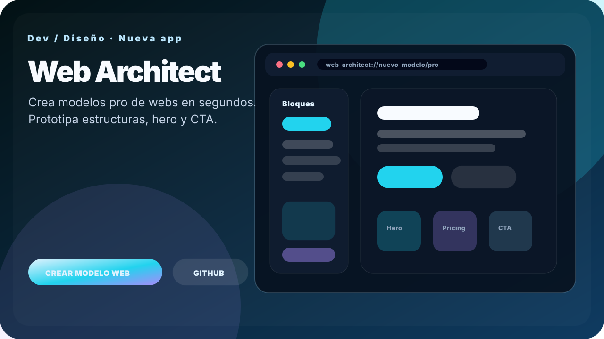

Nueva app destacada
Web Architect
Crea modelos pro de webs en segundos. Una herramienta directa para generar ideas, estructuras y diseños web con acabado profesional.

Top apps
Imprescindibles recomendadas
Los proyectos con más fuerza para entender el ecosistema sin perderse en un catálogo enorme.
Rutas rápidas
Entra por necesidad, no por lista
Accesos directos para encontrar rápido las apps nuevas, las de escritura, las de desarrollo y el Universo 404.
Mapa
Sagas y áreas
El catálogo está organizado por mundos de trabajo para que no parezca una lista caótica.
Catálogo
Todas las apps
Busca, filtra, guarda favoritos y abre cada proyecto en GitHub Pages o GitHub.
Mostrando 46 apps.
No encuentro ninguna app con esos filtros.
Prueba otra búsqueda o limpia los filtros.